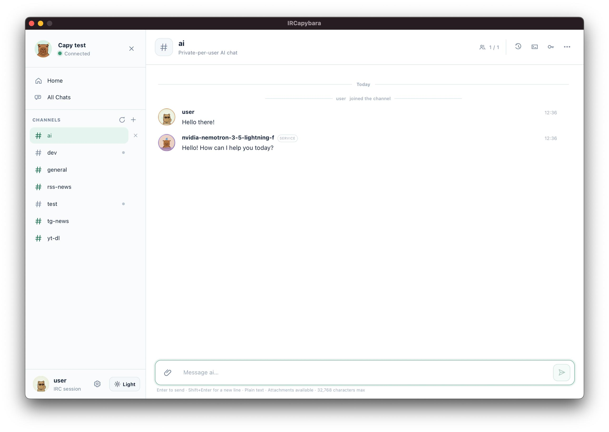

Compatible with traditional IRC
Classic IRC, ready for the way you chat today. Extended and secured for modern use. IRCv3 support is pending.
IRCapybara is server and client software written in Go with a tiny memory and storage footprint.

Built with Go and Wails. Client documentation and source
Classic IRC, ready for the way you chat today. Extended and secured for modern use. IRCv3 support is pending.
Send and download files through the IRCapybara server. No legacy unencrypted communications.
Uses your system’s web view. The desktop app is under 30 MB.
The single-server Go implementation supports public and invite-only channels, nickname registration, and recent channel history. Ready to be deployed in a distroless container.
Mirror feed updates into IRC channels.
Mirror public channels or use a bot to bridge conversations.
Connect an OpenAI-compatible Chat Completions endpoint for chat in IRC. Chat with AI agents.
Add custom capabilities to your server with modular plugins.
IRCapybara is now available on Android. Keep communicating and stay productive, even when network conditions are bad and speeds are limited.
IRCapybara’s source is available for personal use.
Licensing terms for Client and Server apply.
Explore the project on GitHub
Download a release or build from source.